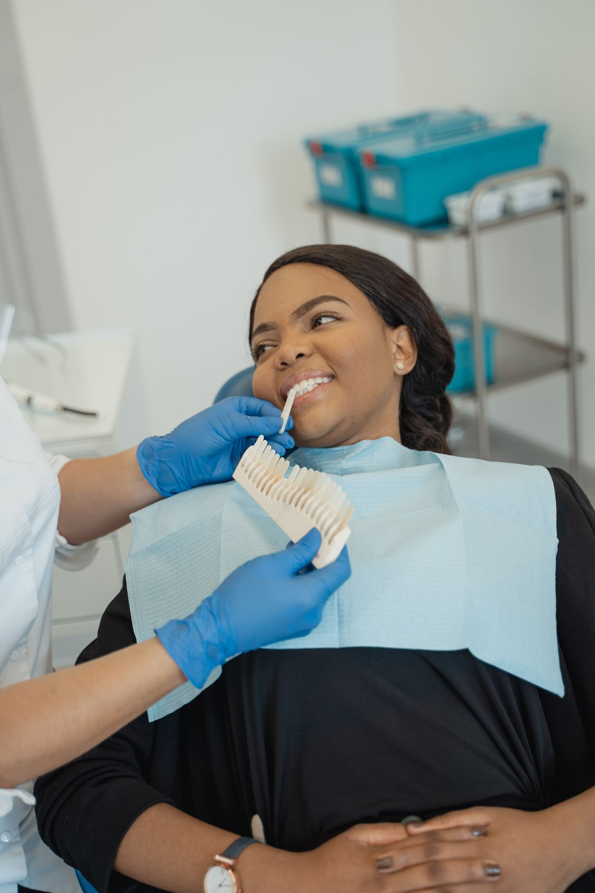
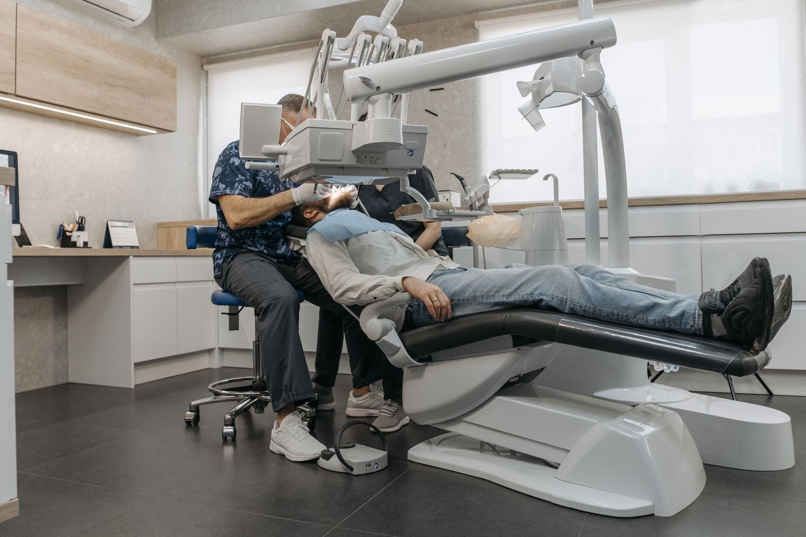

ODONTOLOGÍA EN SOGAMOSO, BOYACÁ
Tu sonrisa.
Tu historia.
Tu propia esencia.
Una atención pensada para ti, desde la primera conversación hasta cada paso de tu cuidado.
Tu bienestar empieza con
sentirte escuchado.
01 / UNA FORMA MÁS HUMANA DE CUIDARTE
Antes de cuidar
tu sonrisa,
queremos conocerte.
Lo que necesitas, lo que esperas y lo que te preocupa también son parte de tu consulta.
La propuesta es sencilla: dedicar tiempo a escucharte, explicarte las opciones y construir contigo un camino de cuidado que tenga sentido para tu salud y tu día a día.
Tu voz importa. Espacio para preguntar y hablar de tus expectativas.
Entender para decidir. Explicaciones claras antes de avanzar.
Un cuidado individual. Las recomendaciones parten de tu valoración.
02 / EL PRIMER PASO ES UNA VALORACIÓN
Hay muchas maneras
de cuidar tu sonrisa.
Explora las áreas que te interesan.
El plan adecuado se define en consulta.
Valoración integral
Conocer el estado de tus dientes, encías y boca es el punto de partida.
Quiero orientación ↗ 02Prevención y cuidado
Conversar sobre tus hábitos y las recomendaciones de cuidado para ti.
Quiero cuidarme ↗ 03Estética dental
Explorar tus expectativas sobre la apariencia de tu sonrisa y las alternativas.
Explorar opciones ↗ 04Ortodoncia
Un espacio para consultar sobre alineación dental y valoración especializada.
Conocer el proceso ↗ 05Rehabilitación oral
Orientación sobre alternativas para recuperar piezas o estructuras dentales.
Consultar alternativas ↗ 06Cuidado de las encías
La salud de tu sonrisa también empieza en los tejidos que la sostienen.
Solicitar orientación ↗Áreas ilustrativas para esta propuesta. La oferta y las especialidades se confirmarán con el odontólogo.

03 / UN TRATO TAN ÚNICO COMO TÚ
El detalle
que hace
la diferencia.
Sentarte con tranquilidad. Poder preguntar. Comprender lo que sigue. La experiencia también está en esos pequeños detalles.
- Una conversación sobre lo que buscas.
- Opciones explicadas en un lenguaje cercano.
- Un plan que puedas conocer antes de decidir.
- Indicaciones de cuidado según tu valoración.
04 / A TU RITMO, CON CLARIDAD
Una consulta.
Un comienzo contigo.
Así presentamos la experiencia
de atención personalizada.
- 01
Te escuchamos
Tu motivo de consulta, tus inquietudes y lo que esperas de la atención.
- 02
Valoramos tu sonrisa
Una revisión clínica para conocer tus necesidades y orientar el siguiente paso.
- 03
Conversamos el plan
Alternativas, etapas y presupuesto explicados antes de iniciar un tratamiento.
- 04
Definimos el cuidado
Indicaciones y próximos controles de acuerdo con tu situación particular.
05 / CERCA DE TI
Nos encontramos
en Sogamoso.
Un espacio para hacer una pausa y darle atención a tu sonrisa.
Calle 20 #9a-30
Barrio Los Alisos
Sogamoso, Boyacá

es parte del cuidado.
06 / EMPECEMOS POR UNA CONVERSACIÓN
Tu próxima
sonrisa empieza
con un hola.
Cuéntanos qué te interesa y cómo prefieres organizar tu primera consulta.
Prueba la experiencia.
Este formulario es una demostración. No reserva citas ni envía información.
CONVERSEMOS CON TRANQUILIDAD
Preguntar también
es cuidarte.
¿Todos los tratamientos se definen en la primera cita?+
La valoración permite orientar el plan. Según lo que se encuentre, el profesional puede indicar estudios adicionales o una valoración especializada antes de proponer el tratamiento.
¿Puedo consultar si me da nervios ir al odontólogo?+
Puedes expresar tus inquietudes desde el primer contacto y pedir que te expliquen cómo será la consulta. La propuesta de atención personalizada pone esa conversación al comienzo.
¿Dónde puedo conocer los precios?+
Los valores deberán confirmarse con el odontólogo. El presupuesto del tratamiento depende de la valoración y del plan propuesto; esta demo no incluye tarifas.
¿Las fotos muestran al odontólogo y a sus pacientes?+
No. Son imágenes de stock para presentar el diseño. Se reemplazarán por las fotografías autorizadas del profesional y su consultorio.
¿Puedo agendar una cita desde esta demo?+
Por ahora puedes probar una solicitud de ejemplo. El contacto y la agenda se habilitarán cuando se confirme el nombre y el WhatsApp del odontólogo.